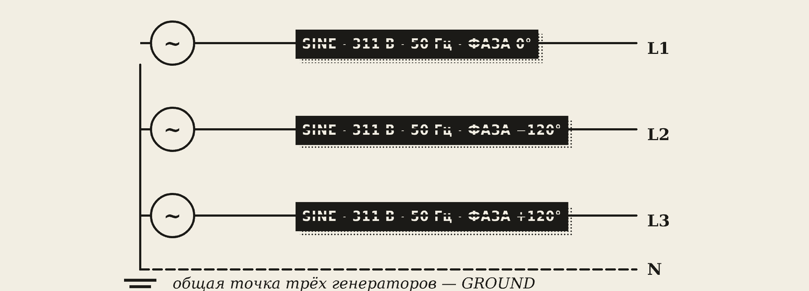
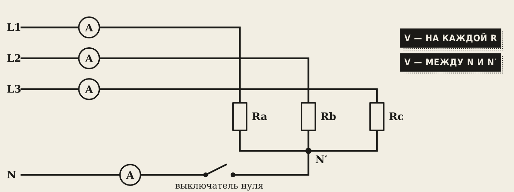
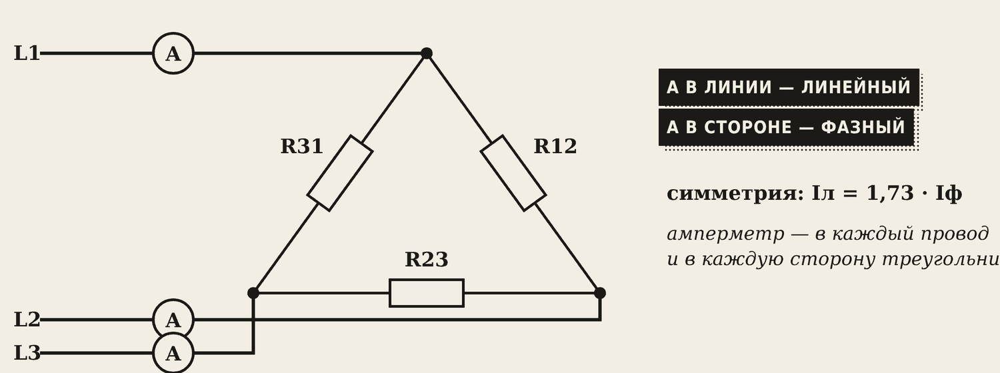

1. Цель и безопасность
Цель: проверить соотношения 1,73 для звезды и треугольника, увидеть роль нулевого провода и что бывает при обрыве нуля и фазы.
Осторожно
380 В — только в модели. Все опыты делаем в Proteus или в браузере. Вживую к щитам и розеткам 380 В студенты не подключаются: нужен допуск по электробезопасности. Обрыв нуля и фазы в настоящей сети — авария: увидели признаки — отключить и звать электрика.
2. Маршруты и варианты
- А — Proteus: три генератора SINE, резисторы, AC-приборы, ключ в нулевом проводе.
- В — браузер: лаборатория «Трёхфазный ток», вкладки «Звезда» и «Треугольник».
Вариант N — номер в журнале:
R0 = 100 + 10·N, Ом
Симметричная нагрузка: R0, R0, R0. Несимметричная: R0, 2·R0, 3·R0. Для N = 10: R0 = 200 Ом.
Интересно: напряжения в опытах одинаковы для всех вариантов (зависят только от соотношения 1 : 2 : 3), а токи у каждого свои.
3. Трёхфазный источник в Proteus

В Proteus нет готовой трёхфазной розетки — соберём её из трёх генераторов:
- Три SINE: Amplitude 311, Frequency 50, Phase 0, −120, 120.
- Вторые выводы всех трёх соединить вместе и с землёй (GROUND) — это нейтраль N.
- Проверить вольтметрами: фаза–ноль 220 В, фаза–фаза 380 В.
Запомните
Между фазами 0 В — у генераторов не задана фаза. Между фазами 440 В — у одного фаза 180° вместо ±120°.
4. Звезда: опыты 1–4

Нагрузки сходятся в точку N′ («эн штрих»). Она соединена с нулём сети через выключатель — им «обрываем ноль». Вольтметр между N и N′ покажет смещение нейтрали — насколько точка звезды «уехала».
| Опыт | Нагрузка | Ноль |
|---|---|---|
| 1 | симметричная | есть |
| 2 | несимметричная | есть |
| 3 | несимметричная | обрыв |
| 4 | симметричная | обрыв |
Образец, вариант 10 (R0 = 200 Ом).
| Опыт | Ua / Ub / Uc, В | Ia / Ib / Ic, А | IN, А | UNN′, В |
|---|---|---|---|---|
| 1 · сим., ноль | 220 / 220 / 220 | 1,10 / 1,10 / 1,10 | 0 | 0 |
| 2 · несим., ноль | 220 / 220 / 220 | 1,10 / 0,55 / 0,37 | 0,66 | 0 |
| 3 · несим., обрыв | 151 / 250 / 275 | 0,75 / 0,62 / 0,46 | — | 72 |
| 4 · сим., обрыв | 220 / 220 / 220 | 1,10 / 1,10 / 1,10 | — | 0 |
Что видно:
- Опыт 1 — всё одинаково, ток в нуле ноль.
- Опыт 2 — токи разные, по нулю течёт ток, но напряжения по 220 В: ноль работает.
- Опыт 3 — ноль оборвали, напряжения разъехались: 151, 250, 275 В. Лампа на 220 В на лёгкой нагрузке сгорит.
- Опыт 4 — при одинаковой нагрузке обрыв нуля ничего не меняет.
5. Треугольник: опыты 5–7

Амперметры двух видов: в проводах L1, L2, L3 — линейные токи, в сторонах треугольника — фазные.
| Опыт | Нагрузка |
|---|---|
| 5 | R12 = R23 = R31 = R0 |
| 6 | R12 = R0, R23 = 2·R0, R31 = 3·R0 |
| 7 | все R0, провод L1 оборван |
Образец, вариант 10.
| Опыт | U12 / U23 / U31, В | I12 / I23 / I31, А | IL1 / IL2 / IL3, А |
|---|---|---|---|
| 5 · сим. | 381 / 381 / 381 | 1,91 / 1,91 / 1,91 | 3,30 / 3,30 / 3,30 |
| 6 · несим. | 381 / 381 / 381 | 1,91 / 0,95 / 0,64 | 2,29 / 2,52 / 1,38 |
| 7 · обрыв L1 | 191 / 381 / 191 | 0,95 / 1,91 / 0,95 | 0 / 2,86 / 2,86 |
Что видно:
- Опыт 5 — 3,30 / 1,91 = 1,73. Правило подтвердилось.
- Опыт 6 — токи разные, но на всех нагрузках по 380 В: в треугольнике перекоса напряжений нет.
- Опыт 7 — провод L1 оборван: R23 работает нормально, а R12 и R31 оказались последовательно и делят 380 В пополам — по 190 В, горят вполнакала. Так «на двух фазах» гудит и греется двигатель.
6. Расчёт
- Мощность каждой фазы: P = U · I (нагрузка — резисторы, cos φ = 1). Мощность цепи — сумма трёх.
- Опыт 1: P = 3 · 220 · 1,10 = 726 Вт.
- Опыт 5: P = 3 · 381 · 1,91 ≈ 2180 Вт — в 3 раза больше, те же резисторы.
- Проверки: звезда — Uл / Uф = 380 / 220 = 1,73; треугольник — Iл / Iф = 1,73.
7. Выводы — шаблон
- В звезде Uл / Uф = …; при несимметрии нулевой провод …, ток в нём … А.
- При обрыве нуля и несимметрии напряжения стали … В, потому что …
- В треугольнике Iл / Iф = …; напряжения при несимметрии …
- При обрыве провода L1 нагрузки R12 и R31 …, напряжение на них … В.
8. Защита
Главный вопрос: почему в нулевой провод не ставят предохранитель? Ответ: его срабатывание — это обрыв нуля, а при разной нагрузке фаз напряжения разъедутся и техника сгорит.
Словарик
- N′ — точка звезды нагрузки.
- Смещение нейтрали UNN′ — напряжение между нулём сети и точкой звезды нагрузки.
- Линейный ток — ток в проводе L1, L2 или L3.
- Фазный ток — ток через одну нагрузку.
- Симметричная нагрузка — одинаковая на всех фазах.
- Несимметричная нагрузка — разная на фазах.
Эталоны в тетрадь
Перепишите в тетрадь по билетам — каждый эталон на отдельную страницу, с рисунком и строкой «Мой пример».
Соединение «звездой»
Соединение «звездой»: фазные и линейные напряжения и токи, роль нулевого провода. Обрыв нуля.
- Звезда (Y): концы трёх обмоток соединены в одну точку (нейтраль), от начал идут фазные провода. (Схема.)
- Фазное напряжение — между фазой и нулём (220 В). Линейное — между двумя фазами (380 В). Uл = 1,73·Uф.
- Токи: Iл = Iф.
- Нулевой провод выравнивает напряжения, когда нагрузка на фазах разная (в одной квартире включена плита, в другой — только лампочка).
- Обрыв нуля: в одних квартирах напряжение падает, в других растёт почти до 380 В — сгорает техника. Поэтому в нулевой провод не ставят предохранители.
Соединение «треугольником»
Соединение «треугольником»: соотношения токов и напряжений. Когда звезда, когда треугольник.
- Треугольник (Δ): конец одной обмотки соединён с началом следующей, нулевого провода нет. (Схема.)
- Напряжения: Uл = Uф — на каждой нагрузке 380 В.
- Токи: Iл = 1,73·Iф (при одинаковой нагрузке).
- Звезда — когда нагрузка рассчитана на 220 В и нужен ноль (квартиры, освещение). Треугольник — когда нагрузка рассчитана на 380 В (мощные двигатели, печи).
- На клеммнике двигателя перемычки ставят «звездой» или «треугольником» — смотрят по шильдику (например, Δ/Y 220/380 В).
Мощность трёхфазной цепи, подключение сварки
Мощность трёхфазной цепи. Подключение сварочного оборудования к трёхфазной сети.
- Мощность при одинаковой нагрузке фаз: P = 3·Pф = 1,73·Uл·Iл·cos φ.
- Одни и те же нагреватели в «треугольнике» дают в 3 раза больше мощности, чем в «звезде».
- Сварочное оборудование: бытовые инверторы — от 220 В (фаза и ноль); промышленные трансформаторы — от 380 В (две фазы); выпрямители и полуавтоматы — от трёх фаз, они нагружают сеть равномерно.
- Подключают через автомат и разъём (рубильник). Корпус аппарата обязательно заземляют.
Проверь себя
Сначала ответьте сами — в тетради или вслух. Потом нажмите на вопрос, чтобы увидеть ответ.
1Как в Proteus получить три фазы?
Три генератора SINE (311 В, 50 Гц) с фазами 0°, −120° и +120°, общая точка — земля.
2Когда ток в нулевом проводе равен нулю?
При одинаковой (симметричной) нагрузке фаз.
3Что происходит при обрыве нуля и разной нагрузке фаз?
Напряжения на фазах становятся разными: на самой лёгкой нагрузке — почти до 380 В.
4Iф = 2 А, треугольник, симметричная нагрузка. Чему равен Iл?
2 · 1,73 ≈ 3,46 А.
5Почему в треугольнике при разной нагрузке нет перекоса напряжений?
Каждая нагрузка подключена прямо между двумя фазами и получает линейное напряжение 380 В.
6Что будет с нагрузками R12 и R31 при обрыве провода L1?
Они окажутся последовательно и поделят 380 В пополам — по 190 В.
7Во сколько раз мощность тех же резисторов в треугольнике больше, чем в звезде?
В 3 раза.
Попробуйте в лаборатории
Откройте на телефоне или компьютере — ничего устанавливать не нужно.
Ответы к «Проверь себя»
- Три генератора SINE (311 В, 50 Гц) с фазами 0°, −120° и +120°, общая точка — земля.
- При одинаковой (симметричной) нагрузке фаз.
- Напряжения на фазах становятся разными: на самой лёгкой нагрузке — почти до 380 В.
- 2 · 1,73 ≈ 3,46 А.
- Каждая нагрузка подключена прямо между двумя фазами и получает линейное напряжение 380 В.
- Они окажутся последовательно и поделят 380 В пополам — по 190 В.
- В 3 раза.